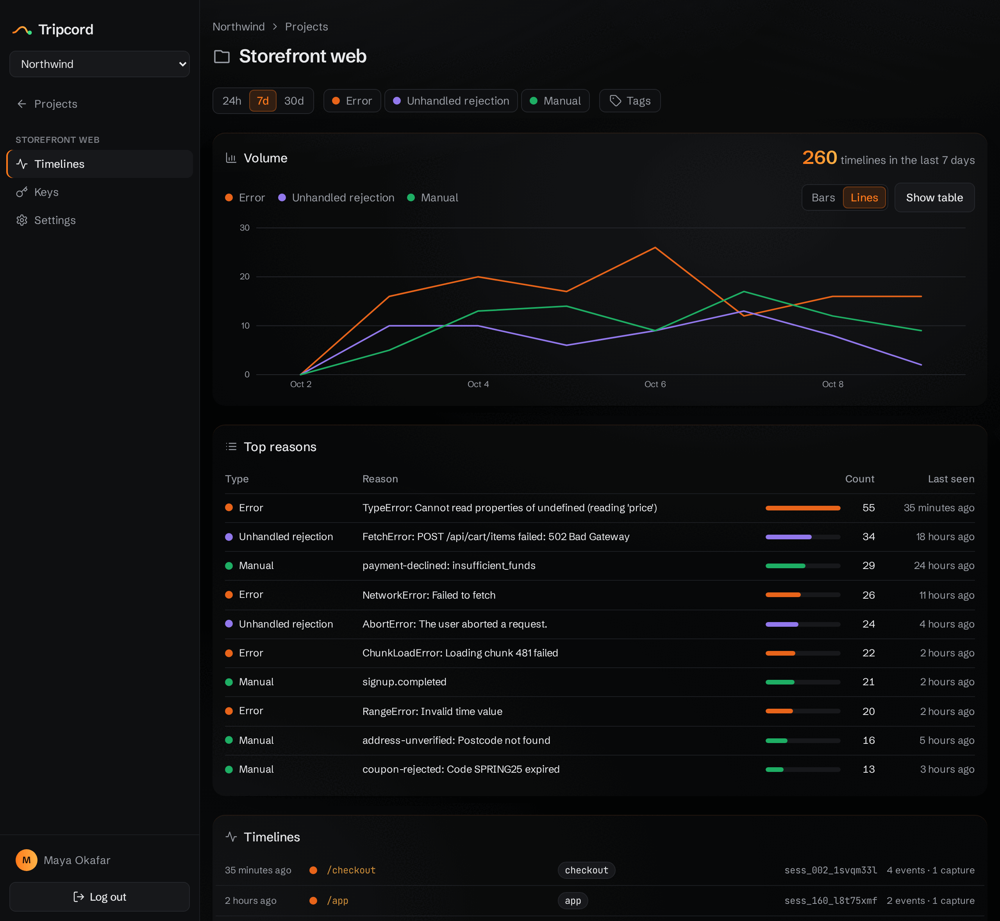

Browser and server events in one timeline
No noise, pure signal.
You choose what goes on the timeline — a click, a signup step, an API call — in the browser and on your server. When something breaks, or a moment you care about happens, Tripcord sends the steps that led there.
Why did this break? How did people get here? One timeline answers both.
-
track("cart.viewed", { items: 3 })0.0sBrowser Your code marks a step
-
"Checkout button"4.2sBrowser A click on
data-trace="Checkout button" -
tracer.track("payment.attempt")9.8sServer Your backend adds its own step
-
TypeError: Cannot read properties of undefined (reading 'zip')11.3sThe error trips the cord, and Tripcord sends these four steps
What you get
A small client, a server you own, and a dashboard built around one question: what led here?
Browser and server, one timeline
Frontend steps and backend breadcrumbs merge into one session, each tagged with its source.
Errors capture themselves
Uncaught errors and unhandled rejections are captured on their own, with the path that led to them.
Tags say where
Label the area of your app a moment came from, then filter sessions by it in the dashboard.
Ranked reasons
The dashboard counts each moment over time and ranks the ones that come up most.
Self-hosted
One Docker image and Postgres. Your data stays on your server, kept for the retention you configure.
You choose every event
No DOM snapshots, no keystrokes, no network logs. Only the moments your app marks are recorded.
How it works
-
1
Install the client
npm i @tripcord/js -
2
Point it at your project
Call
init()with the endpoint and the project's API key. -
3
Mark the moments that matter
track()adds a step to the timeline.capture()sends the timeline on purpose, for a signup or a checkout. Errors and unhandled rejections are captured on their own. -
4
Add server breadcrumbs (optional)
Record a step from your backend with
@tripcord/js/nodeor the REST API. Browser and server events land in the same session.
import { init, track, capture } from "@tripcord/js";
init({
endpoint: "https://app.tripcord.dev/v1/timeline",
apiKey: "tpk_…",
});
track("checkout.step", { step: "shipping" });
capture("checkout.completed");See what led there
Sessions over time, the reasons that come up most, filters by tag, and one merged timeline per session — every browser and server step, side by side.

Safe to run in production
- Your app comes first
- The client never throws and never retries. If Tripcord is down, your users don't notice.
- URLs are trimmed
- By default, page URLs keep only the origin and path. Query strings and fragments, where tokens hide, are dropped.
- You choose what's recorded
- Apart from errors, nothing goes on the timeline unless your code puts it there.
- Kept for 30 days
- Timelines older than that are deleted automatically, and the window is yours to configure.
- Nothing stored on the device, if you want
-
Pass
persist: falseand the client keeps the timeline in memory only: no cookies, nosessionStorage, nolocalStorage.
Open source, and easy to leave
Tripcord is MIT licensed. Run the same image on your own server, or use the hosted beta. Either way, you can export any project as NDJSON or delete it whenever you like.